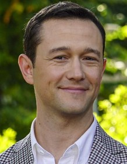
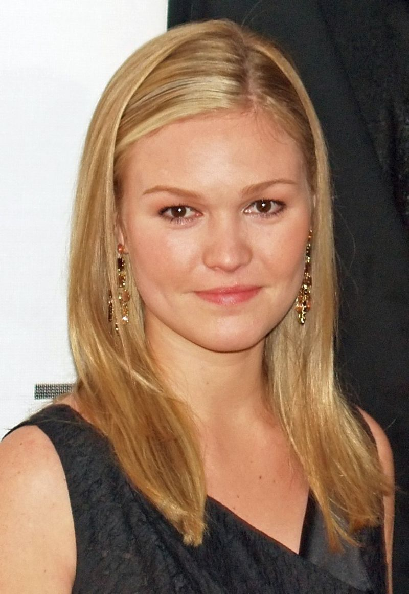

Cast & Crew



- Julia Stiles
- Julia O'Hara Stiles is an American actress. Born and raised in New York City,
Stiles began acting at the age of 11 as part of New York's La MaMa Experimental
Theatre Club. - Heath Leddger
- Heath Andrew Ledger was an Australian actor. After playing roles in several Australian
television and film productions during the 1990s, he moved to the United States in
1998 to further develop his film career. - Joseph Gordan-Levitt
- Joseph Leonard Gordon-Levitt is an American actor. He has received various accolades,
including nominations for the Golden Globe Award for Best Actor – Motion Picture
- Larisa Oleynik
- Larisa Romanovna Oleynik is an American actress. Oleynik began her career as a child
actor, first appearing onstage as young Cosette in a national touring production of
Les Misérables. She was subsequently cast in the title role on the Nickelodeon sci-fi
series The Secret World of Alex Mack from 1994 to 1998.